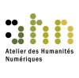

Séminaires/Colloquium 2016¶
oXygen et la Personnalisation simple du Mode Auteur¶
{kind=link}
Mardi 2 février 2016 - 9-13h
salle 1027 du Centre Blaise Pascal, Site Monod
Création des formulaires de saisie pour des fichiers XML / TEI avec des fichiers XML, CSS et RNG Adapter la feuille CSS : Style CSS classiques, Fonctions d’extension des CSS personnalisées, contrôles de formulaire, récupération de valeur d’attributs TEI
Pour illustrer la création de masques de saisie, Carole Boulai et Samantha Saïdi proposeront les fichiers utilisés dans le cadre du projet Morand : vous pouvez les récupérer avant la séance sur GitHub.
Discussion ouverte à partir des problèmes rencontrés sur les exemples présentés et sur les possibilités de personnalisation plus avancée du mode Auteur comme la configuration d’un Document Type Association;
Discussion et test du framework jteiPlus proposé par George Bina.
oXygen et la la personnalisation avancée du Mode Auteur : framework TEI personnalisé¶
Mardi 1 mars 2016 - 9-13h
Séance exceptionnellement sur le site Descartes de l’ENS de Lyon, en R 253 (2ème étage, couloir Triangle à gauche)
Présentation générale des frameworks pour oXygen et d’une adaptation du framework TEI P5
Exercices pratiques : Je créé mon framework TEI personnalisé dans oXygen ; ajout de fonctionnalités pour la création de fichier TEI en mode auteur
Vers une sociolinguistique computationnelle : l’explosion des données numériques au service des sciences du langage¶

25 mars 2016 de 11h à 12h
COLLOQUIUM Centre Blaise Pascal-Atelier des Humanités Numériques
Grande salle du CBP (LR6 C 023), ENS Lyon, France
Jean-Philippe Magué, ENS de Lyon
Organisateurs :
Jean-Philippe Magué, Samantha Saïdi (Atelier des Humanités Numériques, ENS de Lyon)
Cerasela Calugaru (Centre Blaise Pascal, ENS de Lyon, France)
(27 participants)
La langue varie : d’un individu à l’autre, d’une communauté à l’autre et bien sur d’une époque à l’autre, les manières d’employer une même langue varient. Depuis une cinquantaine d’années la sociolinguistique variationniste s’attache à montrer comment les structures sociodémographiques des populations conditionnent cette variation. L’explosion de la communication en ligne, notamment via les réseaux sociaux, est en position de bouleverser les méthodes de la sociolinguistique. On dispose à présent de données numériques portant tant sur les interactions linguistiques des individus que sur leur sociabilité qui diffèrent radicalement, tant qualitativement que quantitativement, des données traditionnelles de la sociolinguistique. Nous présenterons le projet SoSweet qui vise précisément à développper une sociolinguistique computationnelle basée sur ces données.
La nouvelle Webapp d’oXygen : l’éditeur oXygen en ligne¶
Mardi 5 avril 2016 - 9-13h
salle 1027 du Centre Blaise Pascal, Site Monod
=> contenu de la séance autour : des apports de la webapp : https://www.oxygenxml.com/webapp/
Heat transport and thermal structure of the Earth’s core¶
11 avril 2016 de 14h à 15h
COLLOQUIUM Centre Blaise Pascal-Laboratoire de géologie de Lyon : Terre, Planète, Environnement
Grande salle du CBP (LR6 C 023), ENS Lyon, France
Dario Alfe, Professor, University College London
Organisateurs :
Caroline Fitoussi, Razvan Caracas (Laboratoire de Géologie, ENS de Lyon)
Cerasela Calugaru (Centre Blaise Pascal, ENS de Lyon, France)
(29 participants)
The Earth is a dynamic planet, reshaping its surface and its interior on geological time scales. Most of the energy responsible for these activities was deposited in the original accretion process 4.5 billion years ago, and is continuously produced in the decay of radioactive material. On much shorter time scales (thousands of years), the Earth’s liquid outer core recycles and mixes throughout. These convective motions are responsible for the generation of the Earth magnetic field, and for transporting heat from the bottom of the core to the base of the mantle, where it is used to drive mantle convection. Transport of heat mechanisms in the core are determined by the thermal conductivity of core material. Ohmic dissipation of the magnetic field generating currents depends on the electrical conductivity. Knowledge of these two parameters is therefore essential to build a thermal model of the Earth and its magnetic field. I will discuss recent direct calculations and measurements of these two parameters, which are significantly higher than conventional estimates based on extrapolation from ambient conditions, and have important consequences for our understanding of the Earth’s thermal structure, and in particular for the sustainability of convection in the outer core. I will also try to mention very recent results on mantle/core chemical equilibrium, which may indicate a flux of oxygen from the mantle to the core, and how this can affect the overall stability of the liquid core.
Elena Pierazzo : théories, modèles et méthodes de l’édition savante numérique¶
12 avril 2106 : 10h30 - 12h30
ENS de Lyon - Site Descartes - salle F08
Séminaire organisé par l’Atelier des Humanités Numériques de l’ENS de Lyon, avec le soutien de MutEC.
Présentation et discussion de la synthèse critique que l’auteur, Elena Pierazzo (université de Grenoble), a récemment publiée : Digital Scholarly Editing. Theories, Models and Methods, Ashgate, 2015.
Inscription recommandée auprès de Nathalie Arlin : nathalie.arlin[at]ens-lyon.fr
Résumé :
Le titre de l’ouvrage Digital Scholarly Editing pose dans un premier temps une difficulté de traduction : « ecdotique numérique », « critique textuelle numérique » ou encore « philologie numérique » pourraient être des équivalents acceptables ; mais au-delà de cette complexité liée à sa traduction, il nous semble important de définir les concepts désignés par cette terminologie. S’agit-il d’une nouvelle discipline ou d’une nouvelle méthode de philologie traditionnelle ? En quoi consiste-t-elle exactement ?
Voici quelques-unes des questions traitées par l’auteur, Elena Pierazzo, dans son livre Digital Scholarly Editing. Publié en 2015, cet ouvrage centre sa réflexion sur la question de la modélisation (des éditions, du domaine scientifique, de la chaine éditoriale,…), qui représente l’atout théorique le plus important et innovant des humanités numériques. En fait, l’ecdotique numérique se situe à la base des humanités numériques d’un point de vue historique et méthodologique et l’analyse de ses enjeux et de ses potentiels peut aussi aider à comprendre une étiquette qui s’applique parfois à n’importe quoi, pourvu qu’il soit numérique. Le même destin s’applique à la philologie numérique, et on s’interroge encore si produire une édition avec son ordinateur reste une condition nécessaire ou suffisante. Enfin, on se posera également la question de la pérennisation des produits numériques et si l’effort philologique trouve ou pas une bonne incarnation dans un media à la pérennité qui reste encore incertaine.
Omeka : utiliser le nouveau plugin Bookmeka¶
Mardi 3 mai 2016 - 9-13h
ENS de Lyon - Site Descartes - salle R314
Bookmeka : plugin pour Omeka développé par Frédéric Glorieux (Sorbonne)
Journée calcul du LIP¶
31 mai 2016
Salle de Travaux Pratiques (LR6 D 014) / Grande salle du CBP (LR6 C 023), ENS Lyon, France
(25 participants)
Le Laboratoire de l’Informatique du Parallélisme organise avec la participation du Centre Blaise Pascal une journée scientifique sur le thème de la recherche en informatique autour du calcul.
La journée propose un tutoriel sur l’utilisation de la plate-forme Grid’5000 le matin et des présentations scientifiques l’après midi.
Plus d’informations sont disponibles ici : http://lip2.ens-lyon.fr/web35/index.php/uncategorized/364-journee-calcul-du-lip-31-mai-2016
Pour des raisons d’organisation, il est nécessaire de s’inscrire sur ce doodle avant mardi 24 mai : http://doodle.com/poll/2dstw7i87fi9cfgn
Librairies JS et visualisation de données (ou « visual narratives ») : Knight Lab, Simile, …¶
Mardi 7 juin 2016 - 9-13h30
salle 1027 du Centre Blaise Pascal, Site Monod
Chacun.e pourra venir avec un échantillon de données qu’il/elle voudrait afficher sur des cartes, des lignes de temps, etc. A partir de ces échantillons, nous pourrons tester différentes librairies Javascript comme Knight Lab, Simile, …
Self-Assembly of Prebiotic Organic Materials from Impact Events of Amino Acid Solutions¶
23 juin 2016 de 11h à 12h
COLLOQUIUM Centre Blaise Pascal-Laboratoire de géologie de Lyon : Terre, Planète, Environnement
Grande salle du CBP (LR6 C 023), ENS Lyon, France
Nir Goldman, Lawrence Livermore National Laboratory, Physical and Life Sciences Directorate
Organisateurs :
Razvan Caracas (Laboratoire de Géologie, ENS de Lyon)
Cerasela Calugaru (Centre Blaise Pascal, ENS de Lyon, France)
(31 participants)
Proteinogenic amino acids can be produced on or delivered to a planet via abiotic sources and were consequently likely present before the emergence of life on early Earth. Amino acids could have been delivered by exogenous sources, such as meteorites, comets, and interstellar dust partcles. Dipeptides of proteinogenic amino acids have been produced in the laboratory in interstellar ice models. Shock synthesis of amino acids has also been observed in both computational and experimental studies. Shock compression can induce the formation of extended C-N bonded networks similar to peptide chains in astrophysical ices. However, the role these materials played in the in the emergence of life remains an open question, in part because little is known about their survivability and reactivity upon impact with the early Earth surface. Prebiotic synthesis derived from amino acids and peptideactivating agents would depend heavily on their fate during extreme pressures and temperatures. To this end, we have used quantum simulations to explore the role of extreme conditions in the emergence of organization of amino acids. Using a force matching semi-empirical quantum simulation method in development in our group, we have studied oblique impacts of aqueous glycine solutions at conditions of up to 40 GPa and 3000 K for close to chemical equilibrium timescales. We find that these elevated conditions induce the formation of extended carbon-nitrogen containing oligomers with a number of different chemical moieties such as hydroxyl and amine groups diffusing on and off the structures. Expansion and cooling causes these materials to break apart and form a wide variety of stable, potentially life-building compounds, including long-chain linear and branched hydrocarbons and amines. Our results help determine the role of comets and other celestial bodies in both the delivery and synthesis of polypeptides and homochirality to early Earth. This will help guide future experimentation by providing both a possible synthetic mechanism as well as a catalogue of possible chemical products to be investigated.
Ordering and surface segregation in miscible Nanoalloys : cases of Co-Pt, Pd-Au and Pd-Pt¶
19 octobre 2016 de 11h à 12h
COLLOQUIUM Centre Blaise Pascal-Laboratoire de Chimie
Grande salle du CBP (LR6 C 023), ENS Lyon, France
Christine Mottet, CINaM - Centre Interdisciplinaire de Nanoscience de Marseille
Organisateurs :
David Loffreda (Laboratoire de Chimie, ENS de Lyon)
Cerasela Calugaru (Centre Blaise Pascal, ENS de Lyon, France)
(20 participants)
Nanoalloys are commonly nanoparticles of alloys where both size and composition influence their structures and properties. The surface is the place where segregation potentially occurs, whereas the core can be chemically ordered according to the bulk phase diagram. The chemical arrangement at the surface plays a major role in catalysis whereas optical and magnetic properties are sensible to the overall chemical configuration.
Using Monte Carlo simulations in canonical and semi-grand canonical ensembles and tight-binding semi-empirical potentials, we optimize the equilibrium atomic and chemical structure not only at zero Kelvin (fundamental state) but also at finite temperature at which the nanoparticles are used (catalysis, magnetic data storage, plasmonic, …) and for which the knowledge of phase diagrams of nanoalloys is valuable.
OpenTheso, un gestionnaire de thésaurus multilingue¶
22 novembre 2016 de 9h30 à 11h00
ENS de Lyon - Site Buisson - salle 3
Séminaire organisé par l’Atelier des Humanités Numériques de l’ENS de Lyon.
Miled Rousset, MOM-CNRS-Université Lyon 2
Opentheso est un thesaurus supportant la polyhiérarchie, conforme à la norme ISO 25964 (1 – Thésaurus pour la recherche documentaire ; 2 – Interopérabilité avec d’autres vocabulaires). Le développement d’OpenTheso a commencé en 2005 pour répondre à une demande du réseau Frantiq pour gérer son thésaurus PACTOLS. Il permet une gestion avancée de l’arborescence des thésaurus et des concepts. Il offre des interfaces de consultation multilingue et de production en français, anglais, allemand, italien et espagnol. Il permet aussi l’export de termes ou de branches en CSV, SKOS, Json-Ld, l’import en SKOS et CSV, et gère les identifiants pérennes de type ARK.
Déroulement de la séance :
présentation du projet et de ses partenaires
fonctionnalités et normes couvertes par le logiciel
intérêt et mode de fonctionnement avec les bases de données
démonstration en temps réel.
La fusion, ITER… et l’auto-organisation du plasma¶
5 décembre 2016 de 11h à 12h
COLLOQUIUM Centre Blaise Pascal-Laboratoire de Physique
Grande salle du CBP (LR6 C 023), ENS Lyon, France
Yanick Sarazin, CEA Cadarache
Organisateurs :
Antoine Venaille (Laboratoire de Physique, ENS de Lyon)
Cerasela Calugaru (Centre Blaise Pascal, ENS de Lyon, France)
(52 participants)
La fusion par confinement magnétique va entrer dans une nouvelle phase avec le tokamak ITER, en construction à Cadarache. Certains des verrous qui nous séparent d’un réacteur à fusion devraient être levés, et de nouveaux régimes opérationnels seront explorés. Une revue des objectifs du projet nous conduira à présenter le principe de la fusion, ses principaux enjeux et les avancées récentes: la génération et la stabilité de l’équilibre magnétique, l’interaction plasma-paroi sur des temps longs et le contrôle des impuretés, le confinement de l’énergie et des particules rapides, la génération de tritium, et enfin la tenue des matériaux aux hauts flux de neutrons énergétiques et de chaleur. La deuxième partie de l’exposé s’intéressera à certains des mécanismes d’auto-organisation du plasma. Nous verrons qu’ils ouvrent la voie à un meilleur confinement de l’énergie dans les tokamaks, un des paramètres clés pour optimiser les performances.